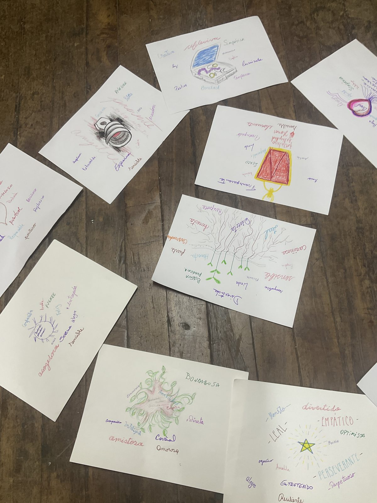
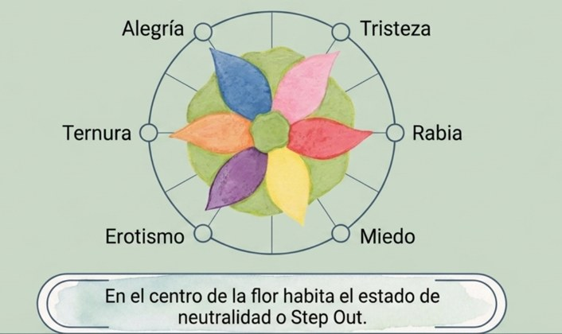
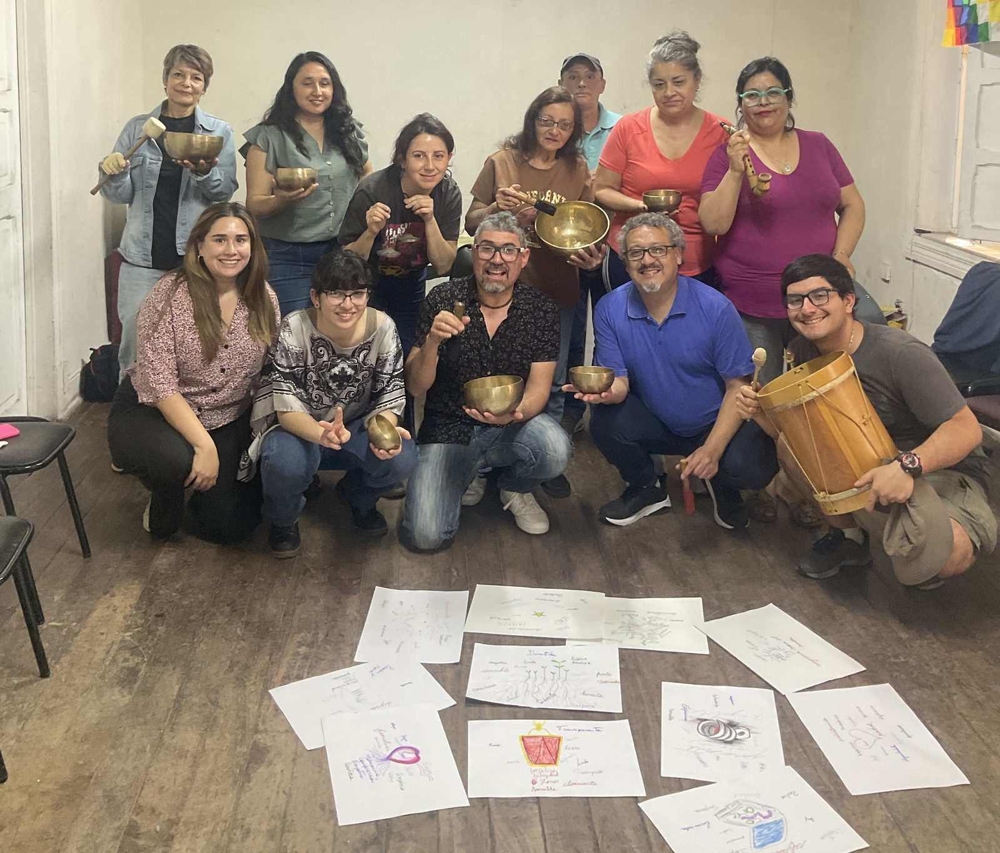

La autoestima, la autocompasión y el arte de mirarnos como un joyero mira una joya: con calma, a la luz y con cariño.
Partimos como siempre jugando, para activarnos y encontrarnos como grupo, y nos regalamos un momento de cuidado con el masaje en parejas "Subiendo la montaña", pidiendo permiso antes de tocar al otro.
Luego escuchamos el cuento "El verdadero valor del anillo" y conversamos sobre los "mercados" a los que vamos a buscar que nos digan cuánto valemos: el trabajo, la familia, la pareja, las redes sociales… y sobre las frases negativas que nos repetimos sin darnos cuenta.
Después hicimos la meditación de la autocompasión: con la mano en el corazón, aprendimos a hablarnos con el mismo cariño con que le hablaríamos a alguien que queremos, y a querernos también con nuestras imperfecciones.
Cerramos con arteterapia: cada persona dibujó su joya interior y escribió en ella sus cualidades. Luego las hojas pasaron de mano en mano y cada participante le regaló a los demás una cualidad que vio en ellos. Al final, cada uno recibió su joya llena de piedras preciosas que no sabía que tenía. 💎

Leal, empático, divertido, perseverante, optimista, alegre… Cada hoja es un regalo del grupo: palabras que nos recuerdan que muchas veces los demás ven en nosotros un valor que nosotros mismos olvidamos.
Un minuto para revivir el encuentro: el juego, la arteterapia, las joyas que pasaron de mano en mano y el grupo que se va formando sábado a sábado. Desarrollo personal a través del arte.
Un relato tradicional, contado aquí con nuestras palabras.
Un joven llegó desesperado a la casa de un anciano sabio. "Maestro", le dijo, "siento que no sirvo para nada, que nadie me valora y que mi vida es un fracaso. ¿Qué puedo hacer?".
El anciano, sin mirarlo casi, le respondió que primero debía resolver un problema propio, y que si el joven lo ayudaba, quizás después podría ayudarlo a él. Se quitó un anillo del dedo meñique y le pidió que fuera al mercado a venderlo para pagar una deuda. "Consigue lo más que puedas, pero no aceptes menos de una moneda de oro".
El joven recorrió todo el mercado. La gente miraba el anillo con interés, pero cuando escuchaba "una moneda de oro", se reía o se daba media vuelta. Alguien le ofreció una moneda de plata y un cacharro de cobre, pero él tenía instrucciones de no aceptar menos. Volvió abatido: "Maestro, no se puede. Nadie paga eso por el anillo".
"Qué importante lo que dices", sonrió el anciano. "Antes de venderlo, tenemos que saber cuánto vale de verdad. Ve donde el joyero, pregúntale cuánto da por él… pero no se lo vendas".
El joyero examinó el anillo a la luz, con su lupa, lo pesó con calma y dijo: "Si lo quiere vender ya, le doy 58 monedas de oro. Con tiempo, podría valer cerca de 70".
El joven volvió corriendo, emocionado. El maestro lo escuchó y le dijo: "Tú eres como este anillo: una joya valiosa y única. Y solo puede valorarte un verdadero experto. ¿Por qué vas por la vida esperando que cualquiera descubra tu verdadero valor?".
Y volvió a ponerse el anillo en el dedo.
Para conversar con uno mismo:
Relato tradicional. La versión trabajada en el taller pertenece a Relatos Eternos. Cuentos para aprender a aprender, de José María Doria. También existe una versión conocida de Jorge Bucay.
Alba Emoting es un método creado por la neurocientífica chilena Susana Bloch a partir de sus investigaciones sobre la emoción. Descubrió que cada emoción básica tiene un patrón efector propio, el mismo en todas las personas, formado por tres elementos:
Si reconocemos estos patrones, podemos darnos cuenta antes de qué estamos sintiendo, regular su intensidad y expresarlo de forma más clara y cuidadosa. Por eso decimos:
A mayor conciencia corporal, mayor conciencia emocional.

Alegría, tristeza, rabia, miedo, erotismo y ternura. En el centro de la flor está la neutralidad, a la que volvemos con el step out.
Toca cada emoción para ver su respiración, su postura y su rostro.
| Emoción | 🌬️ Respiración | 🧍 Postura y eje | 🙂 Rostro y mirada |
|---|---|---|---|
| TernuraEmpatía y cuidado | Abdominal, lenta y solo por la nariz. Continua y rítmica, como las olas del mar en la orilla: casi no se nota dónde empieza y dónde termina cada ciclo. | Relajada, con un tono tranquilo pero activo para sostener y proteger. El cuerpo se acerca a lo que cuida y la cabeza se inclina un poco hacia un lado. | Mirada contemplativa, sin juicio. Rostro relajado, con una sonrisa suave que sube las comisuras; los párpados suben un poco y achican los ojos. |
| AlegríaConexión y vitalidad | Inhalación profunda por la nariz. Exhalación por la boca abierta, entrecortada, en pequeños golpes de aire desde el diafragma que liberan la risa. | Abierta y relajada, con mucha energía. El cuerpo se mece en un vaivén, como un "monito porfiado", y pierde el control rígido. | Sonrisa amplia y espontánea que muestra los dientes. Los pómulos suben y achican los ojos (aparecen las "patas de gallo"). Frente relajada y cabeza en movimiento. |
| TristezaProfundizar y soltar | Una o varias inspiraciones por la nariz, al mismo ritmo. Exhalación relajada por la boca en forma de tubo, soltando todo el aire… y un poco más. | Como quedarse "sin huesos": la columna se desarma y el cuerpo se entrega al peso de la gravedad, desde la cabeza hasta los pies. Relajación total. | El centro de las cejas se eleva y aparecen arrugas en la frente. Mirada perdida hacia el suelo, comisuras de los labios caídas y mandíbula suelta. |
| RabiaDefensa y foco | Abdominal, rápida y enérgica, como un resoplido: se inhala y se exhala con fuerza por la nariz, abriendo las aletas nasales. | Activa y hacia adelante, con el peso en la punta de los pies y el mentón algo bajo para enfocar. Cuerpo apretado y puños cerrados. | Entrecejo fruncido. Mirada fija y concentrada en un objetivo. Labios, dientes y mandíbula apretados. |
| MiedoAlerta y prevención | La única respiración alta, en el pecho: corta, entrecortada y por la boca abierta, para captar aire rápido. | El cuerpo se aleja hacia atrás, con el peso en los talones, listo para huir. Tensión alta y manos abiertas y tensas. | Ojos muy abiertos para buscar el peligro, cejas elevadas con arrugas en la frente y boca abierta y tensa. |
| ErotismoGoce y disfrute | Tranquila, lenta y solo por la boca, como cuando empañamos un vidrio con aire tibio. | Cabeza hacia atrás, mostrando el cuello en señal de entrega. El cuerpo oscila acercándose y alejándose, con un movimiento suave de caderas en forma de ocho. | Pequeña sonrisa, frente relajada y mandíbula suelta, o boca entreabierta. Ojos cerrados o que se abren y cierran lentamente. |
Alba Emoting es un método desarrollado por la Dra. Susana Bloch. Para profundizar: Al alba de las emociones (Susana Bloch) y Alba Emoting. Biología del emocionar (Susana Bloch y Humberto Maturana), Uqbar Editores. Tabla de patrones efectores preparada para el taller.
Algunos momentos del tercer encuentro. Toca una foto para verla en grande.
🎨 Creando nuestra joya interior

La autocompasión es tratarnos con la misma amabilidad con que trataríamos a alguien que queremos, sobre todo cuando nos equivocamos o lo estamos pasando mal. Esta meditación nos invita a encontrar en el pecho una luz de amor, a recordar momentos en que nos sentimos queridos y a querernos por encima de nuestros defectos e imperfecciones. Luego, ese amor se expande hacia otras personas.
Cómo practicar:
Audio de la Escuela Española de Desarrollo Transpersonal (escuelatranspersonal.com), utilizado con su autorización.
Como el anillo, nuestro valor no cambia porque otros no sepan verlo. Buscar afuera que nos digan cuánto valemos nos deja a merced de cualquier opinión.
Es la mirada profunda que tenemos de nosotros mismos. Se construye con lo que vivimos de niños: si nos faltó ser vistos y valorados, o si nos exigieron demasiado, podemos crecer dudando de nuestro valor.
"Qué tonta soy", "nunca voy a poder", "siempre me pasa lo mismo"… Si las repetimos, la mente se las cree. Mejor decir "una parte de mí se siente insegura": somos mucho más que una sola parte.
A veces no se ve como inseguridad, sino como sobreexigencia, autocrítica, poca tolerancia a los propios errores o reactividad frente a los errores de otros.
Aceptar no es aguantar ni aprobar todo, sino reconocer lo que es. Mirarnos con amor, con nuestras luces y sombras, es el camino para una autoestima sana.
Las joyas de oro tienen formas distintas (anillos, collares, pulseras), pero todas son oro. Así también, cada persona es única y, en esencia, todos compartimos la misma luz.
Antes de dormir, responde por escrito en tu libreta: ¿En qué he progresado hoy? y ¿Qué cualidades positivas he expresado hoy? El autor del cuento propone hacerlo durante 40 noches. ¡Partamos por esta semana!
Cada vez que te pilles diciendo "soy un desastre" o "nunca puedo", detente y cámbialo por "una parte de mí…": "una parte de mí está cansada", "a una parte de mí le cuesta esto". Anota las frases que más te repites.
Pon tu joya interior en un lugar donde la veas todos los días. Léela en voz alta una vez al día y agrégale una cualidad nueva cuando la descubras.
En un momento difícil, lleva la mano al corazón, respira tres veces y pregúntate: "¿Qué le diría a una amiga o amigo querido que está pasando por esto?". Luego dítelo a ti.
Cada día, dile a alguien una cualidad que ves en esa persona. Reconocer el valor de otros nos entrena para reconocer también el nuestro.
Escucha la meditación de la autocompasión al menos 3 veces esta semana.
Del tercer encuentro (el cuento del anillo, la meditación de la autocompasión, tu joya y las cualidades que te regalaron…), ¿qué se quedó contigo? Compártelo aquí: una palabra, una frase o lo que necesites decir.
Muy pronto podrás dejar aquí tu reflexión. Mientras tanto, compártela en el grupo de WhatsApp 💚
Las reflexiones se publican de forma anónima. Antes de aparecer aquí pueden tardar unos minutos. Las de la semana anterior están en la sesión 2.